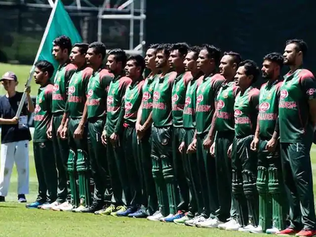
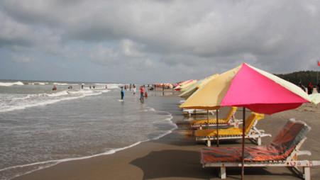
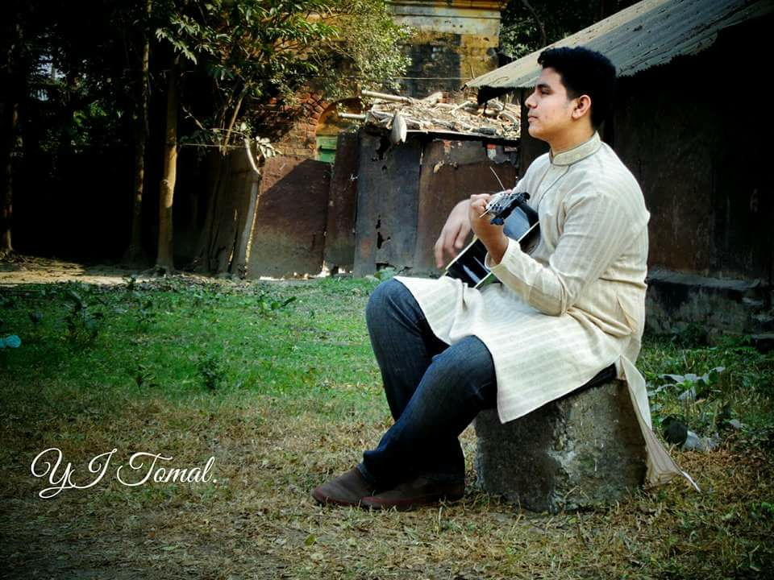
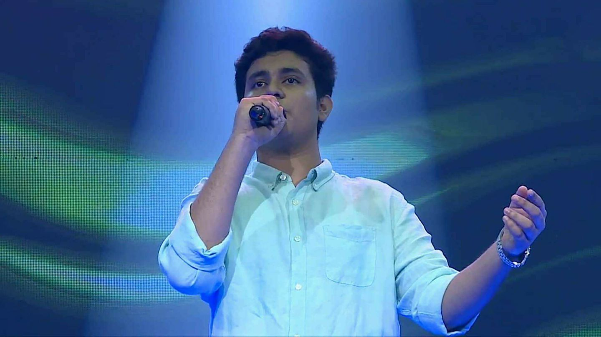

Favourite Sports
My favourite sports is Cricket.Cricket is a gentlemens game and I like the game because of the team spirit and energy along with the agressiveness shown on the field.

Favourite Place
Cox's Bazar is my most favourite place in Bangladesh.Cox's Bazar is world's longest natural sea beach.

Favourite Activies
In my free time, I love to spend my time with singing. I have been learnng music since when I was 6 years old by the will of my mother. In this short music career I have won total of 12 National Awards so far. Which is a big achievement for me in my life.


Thank You Everyone